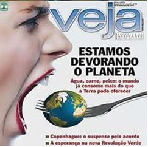

<!-- Desenvolvedor: Leandro Fortaleza -->
<!doctype html>
<html lang="pt-br">

<head>
	<title>Lição 04 Peça 50</title> <!-- alt_f002 -->
        <meta charset="utf-8">
        <script src="../wilib/js/lib/require.js"></script>
        <script src="../wilib/js/app.js"></script>
        <link rel="stylesheet" href="../wilib/css/font-awesome.css">
        <link rel="stylesheet" href="../wilib/css/meioAmbiente.css">

	<script>
		require(['../wilib/js/lib/alternativa_botao'], function (edi) {

			edi.setConfig({
				titulo: 'Observe o título da matéria principal da revista e responda se<br>este título é uma Denotação ou Conotação.',
        mascote: 'mascote',
        tempoFinal: 10
			});

      //balões
      var botoes = [

          {texto: 'Conotação', dataCorreta: true},
          {texto: 'Denotação', dataCorreta: false}

      ];

			edi.alternativa_botao(botoes, function (a, b) {
          //cb
      }, function (a) {
      	$('#certo').fadeIn();
      	$('.alter-btn').animate({top: 240}, 500);
        if (!a)
					$('#certo').html('Atenção! A palavra devorar foi empregada em sentido figurado. Tente novamente!')
				.css({
						height: '41px',
						padding: '19px 5px',
						color: '#F00',
						borderColor: '#F00'
					});
      }, {
				width: 300,
				height: 35,
				left: 430,
				top: 170,
				btnBranco: true,
				animacao: true,
				tamanhoTexto: 14
      });

			$("#balao").peBalao({
					scaleX: -1,
					scaleY: -1,
					top: 120,
					left: 0
			})

			

			$('.alter-btn, #texto').hide();
		});
	</script>

	<style>
		.alter-btn {
			width: 300px;
			display: none;
		}

		#_btn {
			position: absolute;
			left: 110px;
			top: 111px;
			border-radius: 15px;
			border: 2px solid #000;
		}

		#balao {
			position: absolute;
			left: 250px;
			top: 90px;
			width: 150px;
			height: 110px;
			font-size: 13px;
			background: #fff;
			border: 1px solid #ccc;
			text-align: center;
			border-radius: 10px;
			cursor: pointer;
		}

		#balao:hover {
			box-shadow: 0 0 15px rgba(0, 0, 0, 0.3);
		}

		#texto {
			position: absolute;
			left: 435px;
			top: 90px;
			width: 290px;
			height: 110px;
			padding: 10px;
			border: 1px solid #ccc;
			border-radius: 10px;
			text-align: center;
			display: none;
			font-size: 13px;
		}

		#texto p {
			margin-top: 15px;
		}

		#certo{
      position: absolute;
		  width: 302px;
		  height: 68px;
		  top: 132px;
		  left: 434px;
		  font-size: 14px;
		  border-radius: 15px;
		  padding: 5px;
		  border: 2px dashed #9C0;
		  text-align: center;
		  color: #9C0;
		   display: none; 

    }

	</style>
</head>

<body>
</body>
	

	<div id="certo">Correto! Conotação, porque ninguém está devorando o planeta em sentido literal. A palavra devorando indica que estamos destruindo o planeta.</div>
	<!-- <div id="balao">
		<p>
			Interessante este <br>
			produto, mas <br>
			continuo com <br>
			tantas dúvidas... <br>
			Como solucionar?
		</p>
	</div> -->
	<div id="texto">
		<p>
			Neste caso, qual tipo de atendimento é mais rápido para atender
			as necessidades deste cliente?
		</p>
	</div>
</html>
